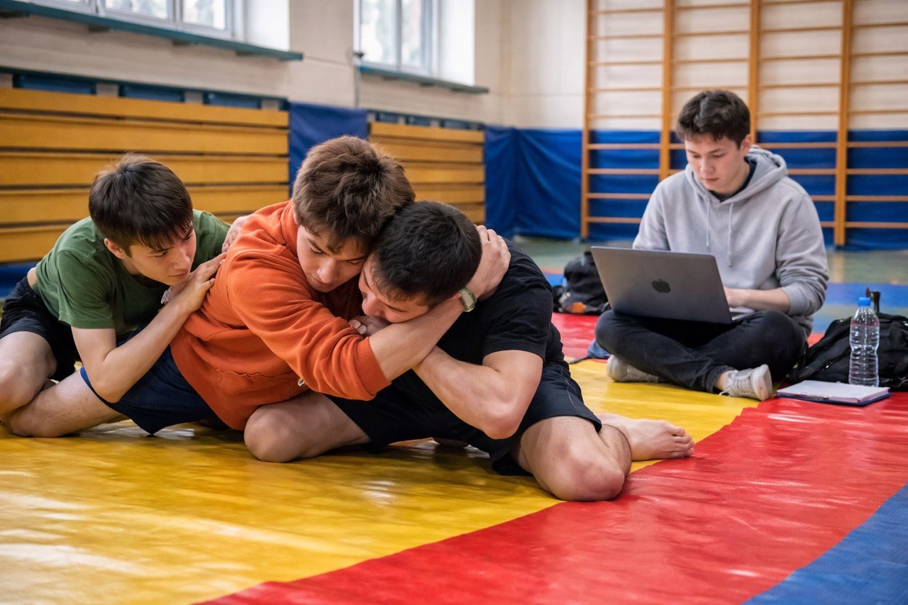
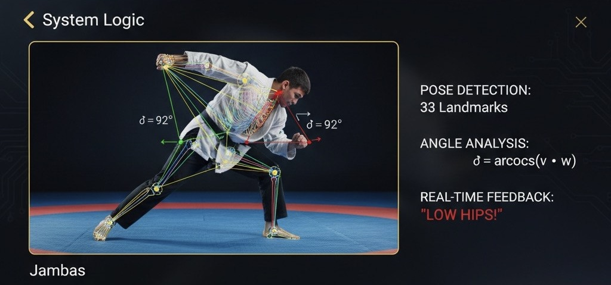
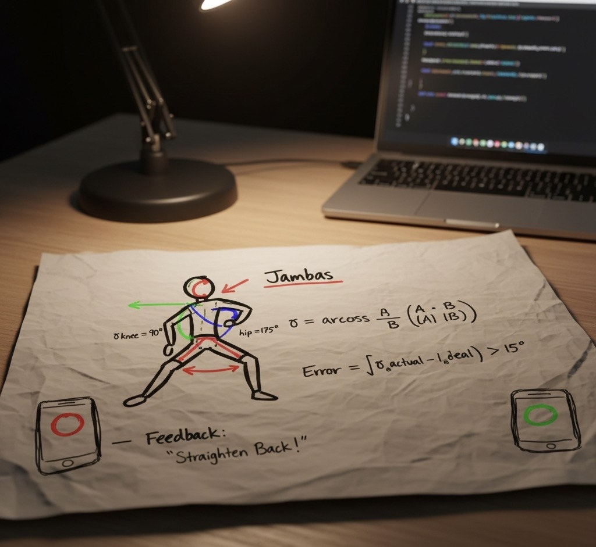
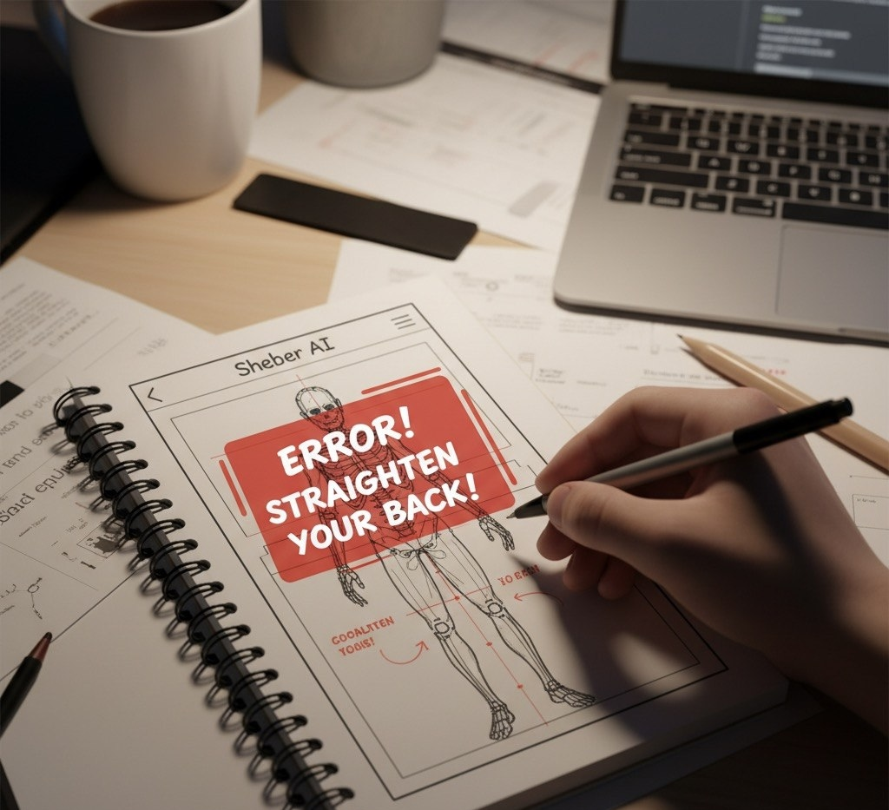
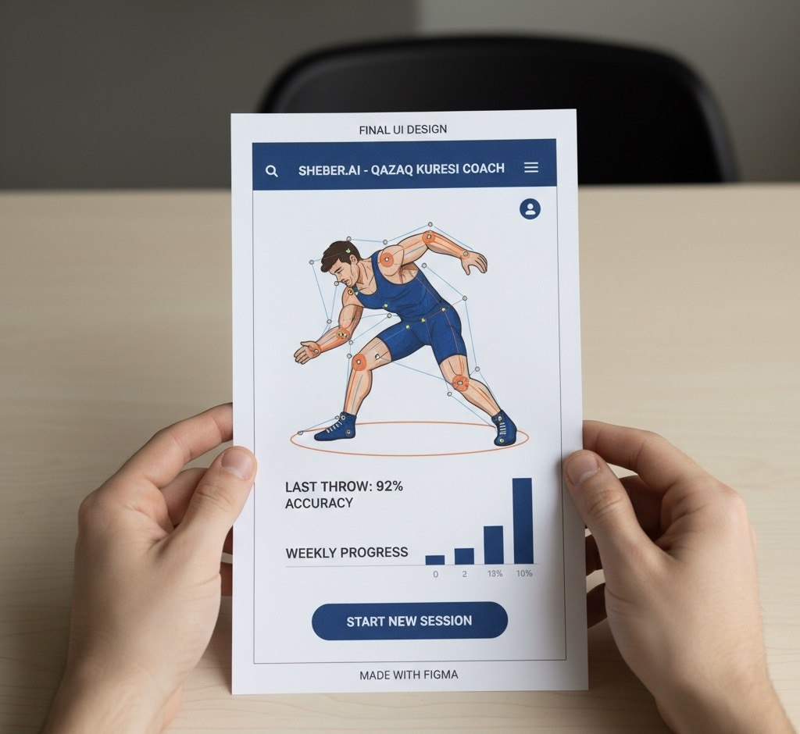
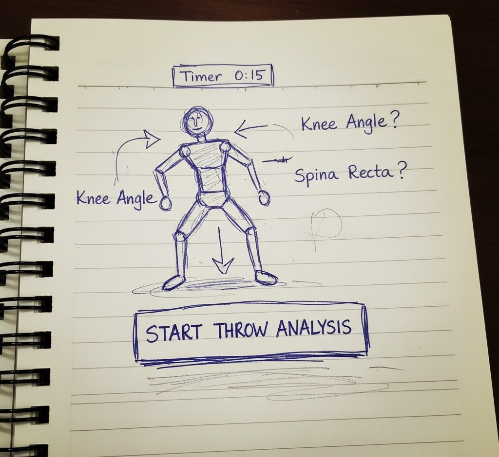
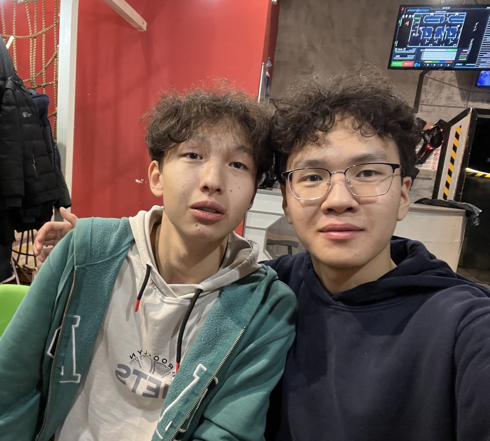

The world's first AI-powered pocket coach for traditional martial arts.
What it is: Sheber AI is a mobile application that acts as your personal digital Sensei for Qazaq Kuresi.
The Problem: Beginners often struggle with the exact biomechanics of traditional throws (like Jambas). Incorrect technique leads to bad muscle memory and injuries.
Why it matters: In wrestling, millimeters and precise angles define the winner. We want to make elite-level coaching accessible to everyone, even in remote villages.

Powered by Python & MediaPipe Computer Vision
The smartphone camera captures the throw at 60 FPS. MediaPipe Pose extracts 33 3D landmarks of the human body.

Our Python logic calculates the exact degrees in the knees, hips, and back, comparing them to the "Gold Standard" of a professional Paluan.

If the back is bent incorrectly, the screen flashes red and provides voice feedback to correct the posture immediately.

Final sketches and digital prototypes of Sheber AI.



Technical Sponsor / Developer
9th Grade, IB BIL
Background: My technical sponsor is my classmate, Nariman. I've always helped him out during wrestling practice, and he is a genius in CS. I went to his dorm room (jataha) to ask if we could code this project.
Q: "Nareke, bro, can we run this MediaPipe on regular phones for the guys in the gym?"
Nariman: "Bro, you've helped me so many times on the mat, we’re getting this done. Yes, Python handles it easily. The phone will track the joints automatically; the main thing is placing the camera correctly."
Q: "What’s going to be the hardest part to finish our MVP?"
Nariman: "The hardest part isn’t the AI, it’s the math. We need to record your perfect Jambas throw, calculate the exact degrees, and write the logic to compare beginners' movements to your technique."
A beautiful design isn't the priority right now. The core is the exact mathematics (calculating angles between joint coordinates). We decided to focus purely on one core Qazaq Kuresi throw to make the analysis flawless before the deadline.